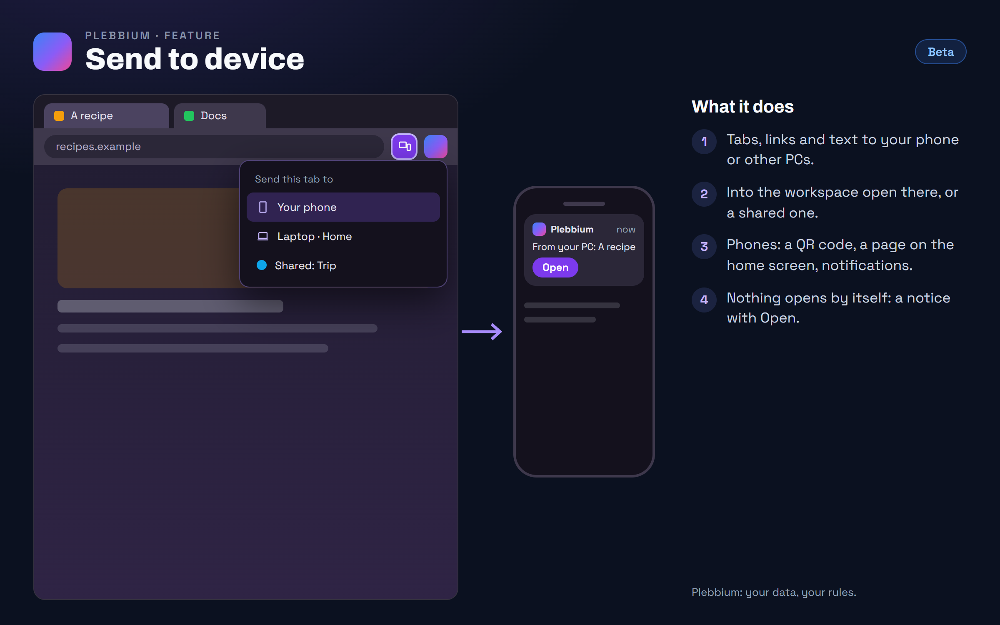

All features › In Beta › Send to device
Send to device
Betasince 3613Send a tab, a link or selected text to your phone or your other PCs: into the workspace open there, or a shared workspace that PC joined. A phone pairs with a QR code and gets a Plebbium page on its home screen, no app, and sends back.

How to use it
- Pair a phone or PC: Plebbium settings › Your devices › Add a device, then scan the QR code. A PC already in your group says yes.
- Send: right-click a page, link, tab or selected text › Send to device, or the button in the address bar.
- Receive on a PC: a notice with Open, and Sent to you in the Pleb menu.
- Send back from a phone: its Plebbium page, or Android's Share sheet.
When it arrived
156.0.8078.3613Beta 25 Oct 2026 · not on Stable yet
Send to device, to phones and PCs.
Why it works this way
No Google sync needed
Chromium's own sending runs on Google's sync, which a browser like Plebbium can't offer everyone. Plebbium's works for everyone, through Plebbium's own relay.
Encrypted end to end
Everything sent is locked with your devices' shared key; the relay only holds locked data, deletes it once collected, and keeps nothing more than 7 days.
No app
A phone uses a page added to its home screen, so Chrome on Android or an iPhone's browser is enough.